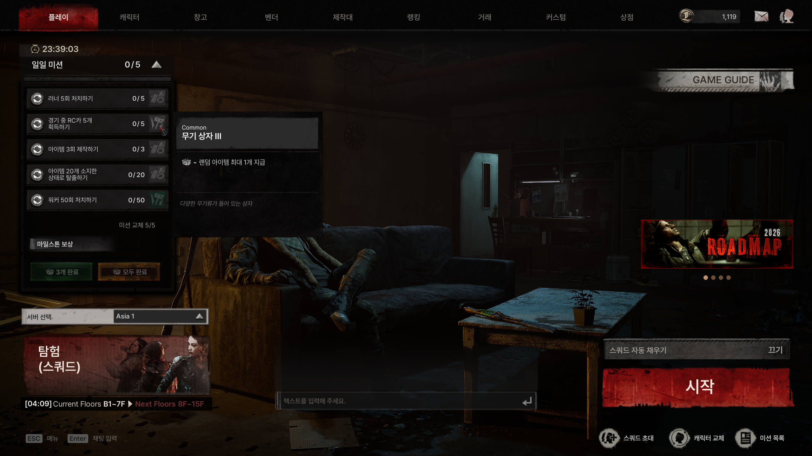
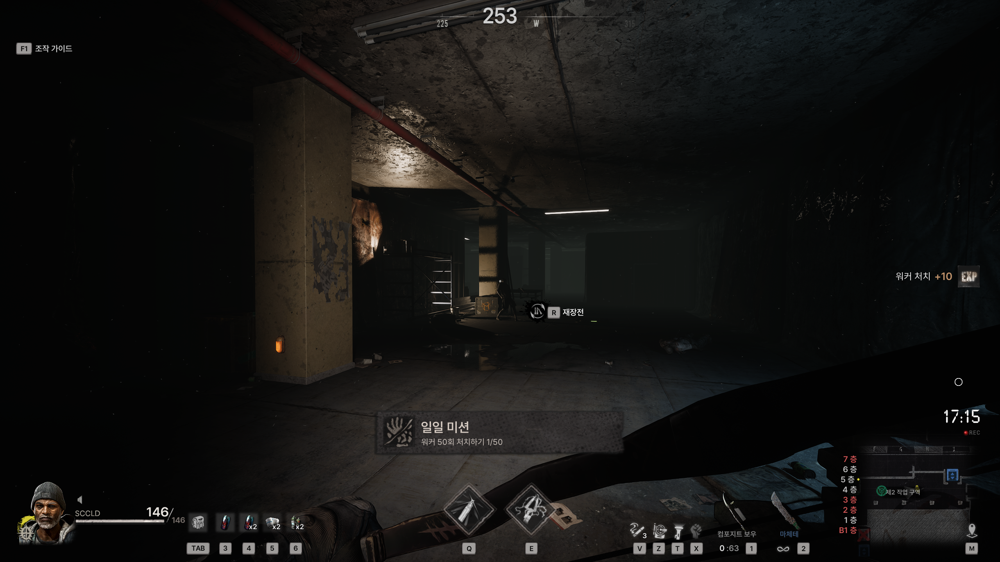
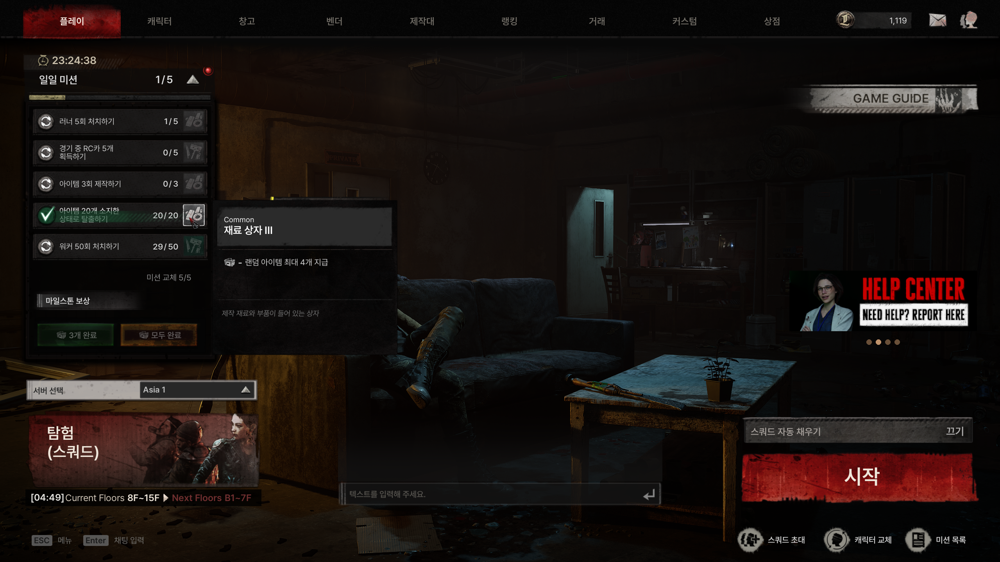
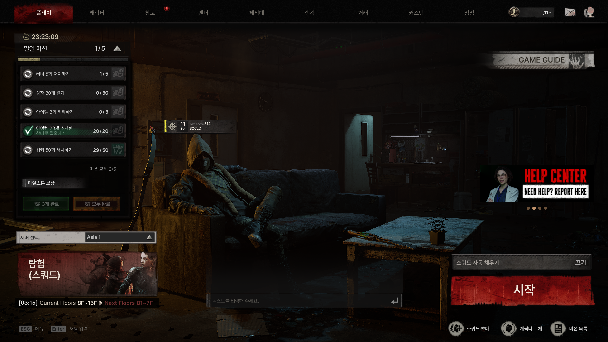

DESIGN & PROTOTYPE
🗓️ 일일 미션
OneWayTicketStudio · The Midnight Walkers: 일일 미션(Daily Mission) 시스템 기획
아래 기획 내용은 실제 사내 기획서를 바탕으로 시스템 설계 흐름을 정리한 요약본입니다. 실제 아이템/재료/확률 수치, 사내 문서 링크 등
민감한 데이터는 제외했습니다.
동작하는 프로토타입 보기 →
🖥️ PC 브라우저 권장 (모바일 비율 미지원)
개요
매일 초기화되는 5개 슬롯 기반 미션 풀과, 미션 종류에 상관없이 동일하게 동작하는 범용 3계층 보상 구조를 설계했습니다. 슬롯마다 성격(전투 / 탐색 / 경제 / 생존 / PvP)을 부여해 플레이어가 매일 다양한 콘텐츠를 순환하며 플레이하도록 유도하고, 리롤(교체) 기능으로 원치 않는 미션에 대한 선택권도 함께 제공했습니다.
화면

플로팅 패널 펼치기: 헤더 클릭으로만 토글되는 접기/펼치기 구조

미션 진행도 업데이트: 진행바와 실시간 카운트 갱신

완료된 미션 존재 시: 수령 대기 상태를 별도로 표시

보상 획득 후: 수동 수령 처리 이후의 화면 상태
성과
- 기존 메인 미션은 클리어 주기가 길고 특정 허들 구간에서 진행이 오래 정체되는 경향이 있어 이탈을 유발 - 매일 목표를 제공해 접속 빈도를 끌어올림
- 기존 미션 타입에 파쇄·거래소·제작·무기 사용 유도 등 다양한 타입을 새로 추가해, 각 콘텐츠를 골고루 소비하도록 설계
- 단순 일일 미션만으로는 동기 부여가 부족하다고 판단해, 일일 미션을 통해 설계도도 획득할 수 있도록 확장 - 인게임 파밍 외의 획득 경로를 추가해 목적성을 강화
기존 방식과의 차이
기존에는 NPC를 찾아가 수동으로 미션을 수락하는 방식이었습니다. 매일 자동으로 지급되고 초기화되는 구조로 바꿔, 접속할 때마다 확인할 목표가 항상 존재하도록 설계했습니다.
| 지급 방식 | NPC별 수동 수락 → 매일 자동 지급(5개) |
|---|---|
| 선행 조건 | 우호도·레벨 등 조건 필요 → 조건 없음 |
| 초기화 | 없음(영구 진행) → 매일 UTC 00:00 초기화 |
| 보상 | 고정 아이템 + 경험치 → 범용 보상 상자에서 랜덤 지급 |
| 마일스톤 | 없음 → 누적 완료 보너스 추가 |
| 미수령 보상 | 소멸 → 초기화 시 자동 우편 발송으로 손실 방지 |
핵심 규칙
| 초기화 시간 | 매일 UTC 00:00 |
|---|---|
| 미션 슬롯 수 | 5개 |
| 리롤 횟수 | 캐릭터별 하루 3회 |
| 진행 단위 | 캐릭터별 독립 진행 |
| 마일스톤 | 3개 / 5개 완료 시 추가 보상 |
| 보상 구조 | 보상 상자 → 확률 기반 스폰 키 → 아이템 풀의 3단계 참조 체인 |
| 보상 수령 | 완료 후 버튼을 눌러야 지급 (수동), 미수령 시 초기화 때 자동 우편 발송 |
| 진행 가능 모드 | 일반 게임 모드만 해당 (튜토리얼/훈련 모드 제외) |
슬롯별 성격
| 슬롯 1 · 전투 | 몬스터 처치, 특정 무기로 처치, 피해량 등 전투 관련 목표 |
|---|---|
| 슬롯 2 · 탐색/수집 | 아이템 탐색, 컨테이너 개방, 지역 발견, 아이템 획득 |
| 슬롯 3 · 경제/제작 | 제작, 특정 아이템 제작, 판매, 재화 소비, 거래 |
| 슬롯 4 · 생존 | 탈출, 생존 시간, 의료 아이템 사용, 파밍 후 탈출 |
| 슬롯 5 · PvP/도전 | 플레이어 처치 등 전투·생존이 혼합된 도전 목표 |
주요 기능
- 슬롯 기반 미션 풀: 슬롯마다 독립된 미션 풀에서 가중치 기반으로 랜덤 선택
- 범용 3계층 보상: 보상 상자 → 확률 기반 스폰 키 → 아이템 풀로 이어지는 구조라 미션 타입이 늘어나도 보상 로직은 그대로 재사용
- 등급 기반 색상: 보상 상자 색상을 하드코딩하지 않고 아이템 등급에서 자동으로 파생 (다국어·확장성 확보)
- 미션 리롤: 하루 3회, 카드가 뒤집히는 연출과 함께 잔여 횟수를 직관적으로 표시
- 수동 보상 수령: 완료 즉시 지급하지 않고 플레이어가 직접 수령하도록 해 성취감과 UI 확인 동선을 분리, 미수령분은 초기화 시 자동 발송으로 손실 방지
- 패널 접기/펼치기: 로비 화면 한쪽에 상시 노출되는 플로팅 패널로, 다른 조작을 방해하지 않도록 헤더 클릭으로만 토글
- 튜토리얼/훈련 모드 제외: 실제 플레이가 아닌 구간에서는 미션 진행이 카운트되지 않도록 예외 처리
- 미션 갱신 플로팅 알림: 진행/완료 상황을 화면 하단에 큐 형태로 순차 노출, 일정 시간 후 자동으로 사라짐
UI 구조
App
├── TopNav
├── DailyMissionPanel (접기/펼치기 플로팅 패널)
│ ├── Header (타이틀 + 진행도 뱃지 + 초기화 타이머)
│ ├── Milestones (3개/5개 완료 보상 버튼)
│ ├── MissionList (슬롯별 미션 카드)
│ │ └── MissionCard (리롤 버튼 + 설명 + 진행바 + 보상 상자)
│ └── RerollCounter (잔여/최대 리롤 횟수)
├── MissionFloating (미션 완료 알림, 큐 처리)
├── RewardPopup (보상 개봉 연출)
└── 공통: 보상 상자 툴팁 · 토스트 알림
데이터 구조
미션 풀·마일스톤·보상 로직을 각각 독립된 테이블로 분리해, 미션 종류가 늘어나도 보상 시스템 자체는 수정 없이 재사용되도록 설계했습니다.
| 미션 풀 | 슬롯별로 어떤 미션이 어떤 확률로 등장하는지 정의 |
|---|---|
| 미션 오브젝티브 | 미션의 목표 조건(처치/수집/제작 등)을 정의하는 공용 테이블 |
| 마일스톤 | 완료 개수 구간별 추가 보상 정의 |
| 시스템 설정 | 초기화 시간, 슬롯 수, 최대 리롤 횟수 등 전역 값 |
| 보상 상자 | 등급·분류 기반의 범용 보상 정의 (신규 추가) |
| 확률 기반 스폰 키 | 보상 상자에서 실제 아이템 풀로 연결되는 확률 테이블 (기존 시스템 재활용) |
| 아이템 풀 | 최종적으로 지급될 아이템과 가중치 (기존 시스템 재활용) |
설계 반복 하이라이트
초기미션 오브젝티브를 범용 파라미터 구조로 설계해 신규 미션 타입을 데이터만으로 추가할 수 있도록 시작
개정패널 조작 방식을 "바깥 클릭 시 접힘"에서 "헤더 클릭 전용 토글"로 변경 - 실수로 패널이 접히는 문제 해소
개정튜토리얼/훈련 모드에서는 미션 진행이 카운트되지 않도록 예외 규칙 추가
추가미션 진행/완료를 화면 하단에 큐 형태로 알려주는 플로팅 알림 UI를 신규 설계해 프로토타입에 구현
구조 개편범용 파라미터 방식을 폐기하고, 기존 미션 오브젝티브 테이블을 참조하는 구조로 재설계 - 다른 시스템과의 데이터 일관성을 높임